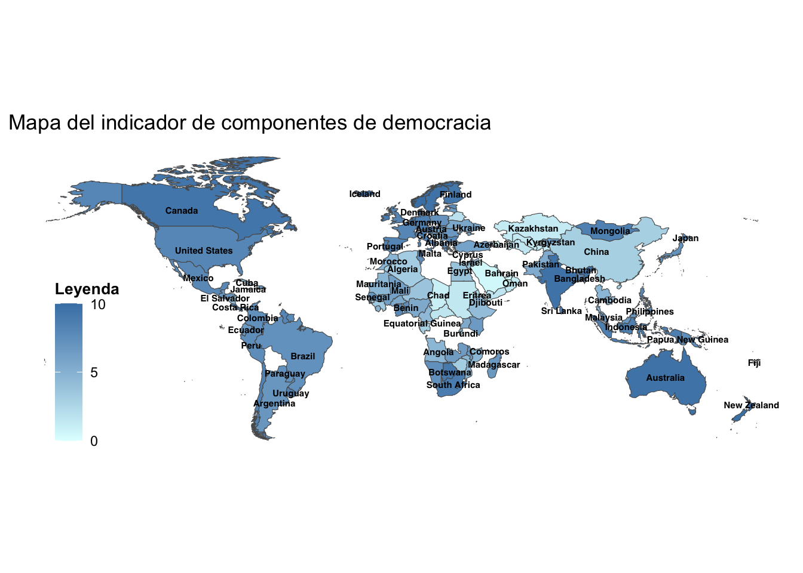
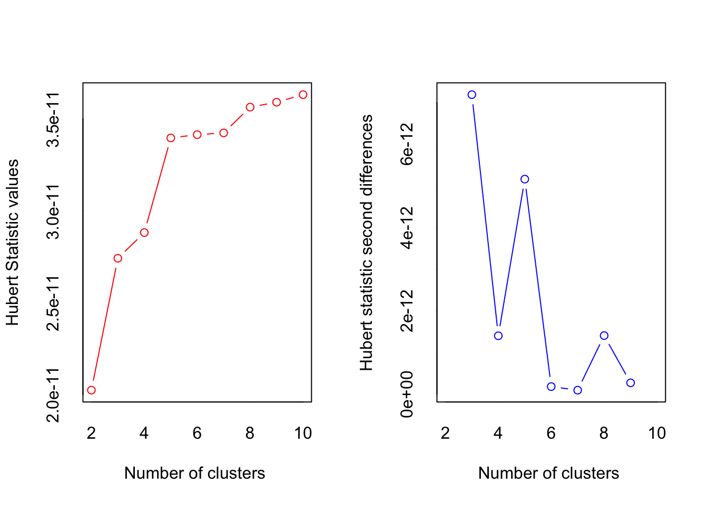
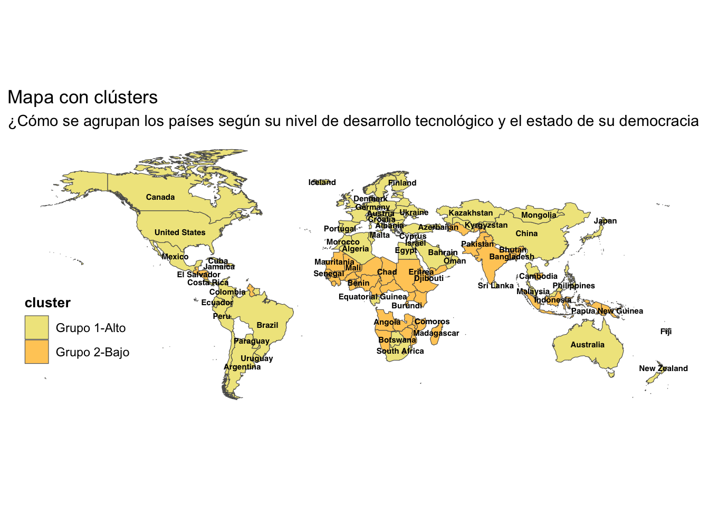

Georeferenciación

FACULTAD DE CIENCIAS SOCIALES - PUCP
Curso: POL 304 - Estadística para el análisis político 2 | Semestre 2023 - 2
Jefas de Práctica: Karina Alcántara 👩🏫 y Lizette Crispín 👩🏫
LLamamos a los paquetes necesarios.
library(latexpdf)
library(rio)
library(data.table)
library(tidyr)
library(dplyr)
library(factoextra)
library(plyr)
library(tidyverse)
library(sp)
library(polycor)
library(psych)
library(lavaan)
library(semPlot)
library(BBmisc)
library(sf)
library(GPArotation)Esta vez usaremos la data “EgovDemocracia”, la cual es un conglomerado de diversos dataset tales como E-gov index, IDH, democracy index, digital access index e internet users by country. Estas datas fueron elegidas debido a la relevancia que han tomado las TIC (tecnologías de información y comunicación) en el acceso a la información por medios digitales. Esto, de cara a las ciencias sociales, nos lleva a una sustancial pregunta: ¿Es el desarrollo de las TICs un factor importante para el desarrollo de la democracia?
En tanto, para reforzar lo aprendido en la segunda parte del curso, haremos uso de las técnicas de factorización y cluster para visualizar los resultados a nivel mundial por medio de la georeferenciación. De esa manera podremos observar el comportamiento de nuestras variables y obtener los primeros hallazgos.
Factores
Paso 1: Matriz de correlaciones
Generamos la matriz de correlaciones para identificar qué variables de nuestra subdata están correlacionadas.
Paso 2: Corroborar si se puede factorizar
KMO
Bartlett
Paso 3: Análisis Factorial Exploratorio
Gráfico de sedimentación
Recomienda 2 factores :)
Autovalores
También recomienda 2 factores :)
Factorizar
Tenemos una recomendación del modelo exploratorio, corroboremos si ello va de la mano con el conocimiento de científicos sociales y ajustemos los factores. ¿Cómo se llamarían los factores?
Modelo_confir = "FAC1 =~ InterUsers + telecommunicationInfras + accesoInformacion + onlineService
FAC2 =~ ProcesoElectoral + FuncionGob + ParticipacionPol+Policulture"
Modelo_confirLo que se realizaría es indicar el nombre de cada factor, y qué variables las integran, solo indicamos el nombre de estas variables, en el siguiente comando indicaríamos la base de datos.
Nos fijamos en la tabla de Latent Variables, y que las variables tengan un pvalue menor a 0.05 para concluir que si aportan a los factores de manera significativa.
Graficamos 🤓
semPaths(modelo, intercepts = FALSE,edge.label.cex=1.5, optimizeLatRes = TRUE, groups = "lat",pastel = TRUE, exoVar = FALSE, sizeInt=5,edge.color ="black",esize = 6, label.prop=2,sizeLat = 6,"std", layout="circle2")Observemos las “señales gráficas”: Vértices, nodos, colores.
Agregamos los factores a la base de datos
Georreferencia a nivel mundial 🗺️
Para poder hacer un mapa con ggplot necesitamos: 1. Las posiciones de los polígonos que representan a los países (shapefile/shp) 2. Combinar la información del shp con lo que se quiere mostrar en los mapas 3. Identificar puntos de corte para la escala 4. Crear el gráfico con ggplot
Combinemos la información del shapefile con nuestra data
Identifiquemos los puntos de corte
Heatmap DEMO
ggplot(world_map_data_DEMO)+
geom_sf(aes(fill=Demo),lwd=0.2)+
geom_sf_text(aes(label =NAME), size = 2
,family="sans",fontface = "bold",check_overlap = TRUE
)+
guides(fill=guide_colorbar(title = "Leyenda")) +
labs(title = "Mapa del indicador de componentes de democracia"
# ,subtitle = "añadir si se desea",
#caption = "Fuente:añadir si se desea"
) +
scale_fill_gradient(breaks=c(0,5,10),limits= c(0,10), high = "steelblue", low = "lightcyan", guide = "colorbar" ) +
theme_bw()+
theme(
axis.text.x = element_blank(),
axis.text.y = element_blank(),
axis.ticks = element_blank(),
axis.title = element_blank(),
panel.border = element_blank(),
panel.grid.major = element_blank(),
panel.grid.minor = element_blank()
)+
theme(
legend.position=c(0.1, 0.3),
legend.title = element_text(colour="black", size=10, face="bold"),
#"left","bottom"
)
Heatmap E-GOV
ggplot(world_map_data_EGOV)+
geom_sf(aes(fill=Egov),lwd=0.2)+
geom_sf_text(aes(label = NAME), size = 2
,family="sans",fontface = "bold",check_overlap = TRUE
)+
guides(fill=guide_colorbar(title = "Leyenda")) +
labs(title = "Mapa del indicador de componentes de Egov") +
scale_fill_gradient(breaks=c(0,5,10),limits= c(0,10), high = "steelblue", low = "lightcyan", guide = "colorbar") +
theme_bw()+
theme(
axis.text.x = element_blank(),
axis.text.y = element_blank(),
axis.ticks = element_blank(),
axis.title = element_blank(),
panel.border = element_blank(),
panel.grid.major = element_blank(),
panel.grid.minor = element_blank()
)+
theme(
legend.position=c(0.1, 0.3),
legend.title = element_text(colour="black", size=10, face="bold"),
#"left","bottom"
)Clusters 😎
Ahora realizamos georeferenciación con la técnica de clusters
Vamos a preparar la base
Cálculo de matriz distancias
Vemos la matriz de distancia
Calculo de clúster
Observamos el dendograma
Graficar

Ver características de los grupos
##
## 1 2
## 85 49library(dplyr)
cluster_resumen=dataClus %>%
mutate(Cluster = res1$cluster) %>%
group_by(Cluster) %>%
summarise_all("mean")
cluster_resumen## # A tibble: 2 × 14
## Cluster ProcesoElectoral FuncionGob ParticipacionPol Policulture onlineService
## <int> <dbl> <dbl> <dbl> <dbl> <dbl>
## 1 1 7.22 6.10 5.88 6.13 0.668
## 2 2 4.36 3.44 4.07 5.05 0.259
## # ℹ 8 more variables: telecommunicationInfras <dbl>, InterUsers <dbl>,
## # accesoInformacion <dbl>, LifeExpectancy <dbl>, ExpectedSchooling <dbl>,
## # Yschool <dbl>, GNI <dbl>, cluster <dbl>## [1] "ProcesoElectoral" "FuncionGob"
## [3] "ParticipacionPol" "Policulture"
## [5] "onlineService" "telecommunicationInfras"
## [7] "InterUsers" "accesoInformacion"
## [9] "LifeExpectancy" "ExpectedSchooling"
## [11] "Yschool" "GNI"
## [13] "cluster"Unimos datasets y ploteamos 💥
## [1] "ProcesoElectoral" "FuncionGob"
## [3] "ParticipacionPol" "Policulture"
## [5] "onlineService" "telecommunicationInfras"
## [7] "InterUsers" "accesoInformacion"
## [9] "LifeExpectancy" "ExpectedSchooling"
## [11] "Yschool" "GNI"
## [13] "cluster" "NAME"cluster_map %>%
ggplot() +
geom_sf(aes(fill = cluster),lwd=0.2)+
geom_sf_text(aes(label = NAME), size = 2
,family="sans",fontface = "bold",check_overlap = TRUE )+
scale_fill_manual(values = c("khaki", "#FFCC66"),labels =c("Grupo 1-Alto","Grupo 2-Bajo"))+
labs(title = "Mapa con clústers ", subtitle = "¿Cómo se agrupan los países según su nivel de desarrollo tecnológico y el estado de su democracia")+
theme_bw()+
theme(
axis.text.x = element_blank(),
axis.text.y = element_blank(),
axis.ticks = element_blank(),
axis.title = element_blank(),
panel.border = element_blank(),
panel.grid.major = element_blank(),
panel.grid.minor = element_blank())+
theme(
legend.position=c(0.1, 0.3),
legend.title = element_text(
colour="black", size=10,
face="bold")#"left","buttom"
)
Georreferencia en Perú
Supongamos que ya tienes una data lista a nivel provincial de Perú, y necesitas que se muestre en un mapa. Si no tengo ninguno de los datos que me brindaron en esta sesión, ¿cómo empiezo desde cero un mapa?
- Buscar en internet el shapefile al nivel que deseo (Link)
- Unir las bases de datos, hacer el merge (en este caso podemos usar los ubigeos)
- Identificar los puntos de corte para la escala de color
- Crear el mapa
Importo el shapefile y su contenido
#importo shapefile
provincias="Límites-provinciales/PROVINCIAS.shp"
mapa_prov=st_read(provincias,stringsAsFactors=FALSE) #importo el contenido del shapefile## Reading layer `PROVINCIAS' from data source
## `/Users/Karina/Estadistica-2/Límites-provinciales/PROVINCIAS.shp'
## using driver `ESRI Shapefile'
## Simple feature collection with 196 features and 79 fields
## Geometry type: MULTIPOLYGON
## Dimension: XY
## Bounding box: xmin: -81.32823 ymin: -18.35093 xmax: -68.65228 ymax: -0.03860597
## Geodetic CRS: WGS 84Uno ambas bases de datos
##
## 010100 010200 010300 010400 010500 010600 010700 020100 020200 020300
## 1 1 1 1 1 1 1 1 1 1##
## 0101 0102 0103 0104 0105 0106 0107 0201 0202 0203
## 1 1 1 1 1 1 1 1 1 1Identifico dos problemas
- Las variables tienen distintos nombres
- La extensión de ambas es distinta
Solucionemos modificando la en mapa_prov